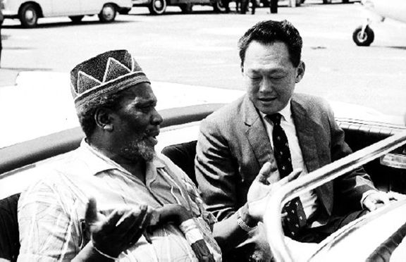

President Jomo Kenyatta receiving me at Mombasa Airport, January 1964.
February 1964: Visiting Julius Nyerere (centre) in Dar-es-Salaam, Tanzania. Stephen Kalong Ningkan, chief minister of Sarawak, is at right.